|
Safe 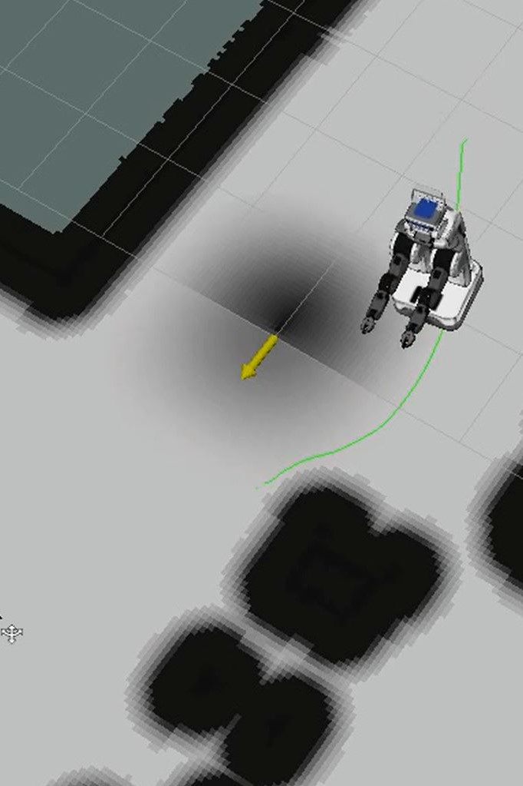
(Sisbot et al. 2007)
|
Social 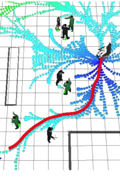
(Rios-Martinez et al. 2011)
|
Legible 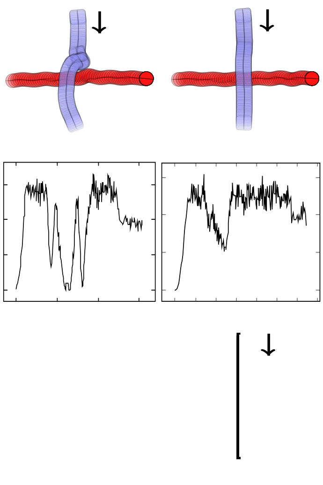
(Kruse et al. 2014)
|
“Even in the absence of any overtly executed action, observers can still read other people’s motor intentions, provided they can see a model’s face, in particular his or her gaze direction.”
HRI studies are strongly skewed towards static situations!?
| 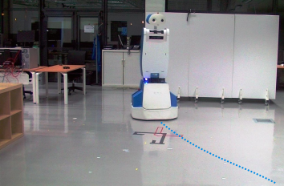 | ⇨ | 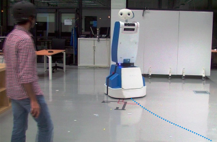 |
| ⇩ | ||
| 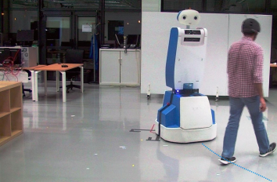 | ⇦ | 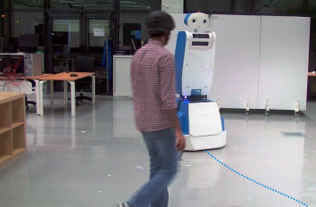 |
| 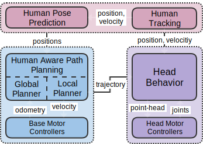 | 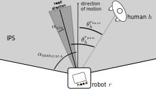 |
|
| 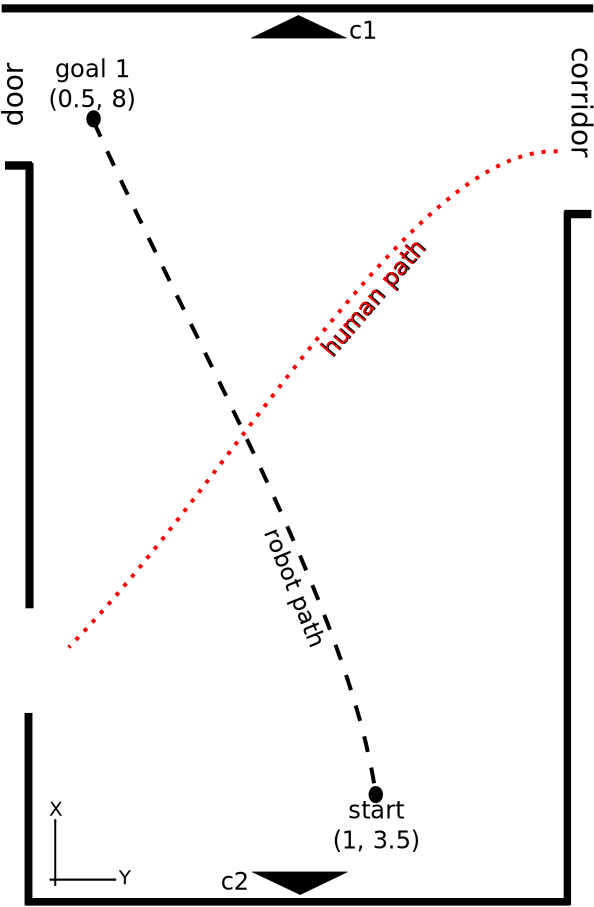 |
|
| 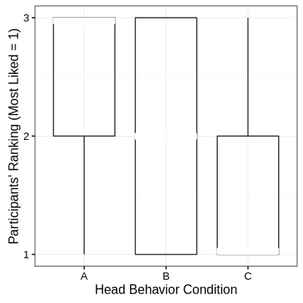 | 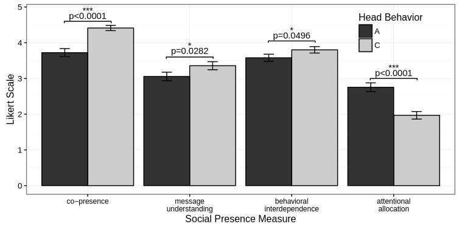 |